01
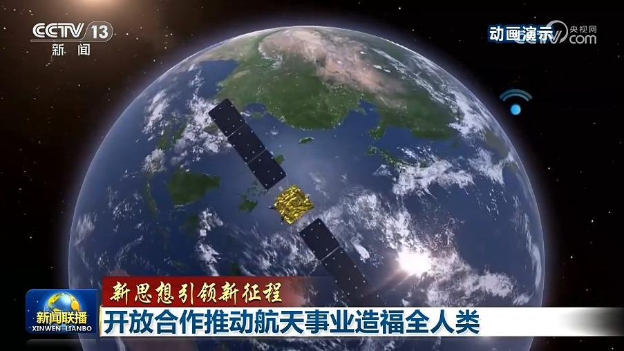
【新思想引领新征程】开放合作推动航天事业造福全人类
习近平总书记指出，太空探索永无止境。中国愿同各国一道，加强交流合作，共同探索宇宙奥秘，和平利用外空，推动航天技术更好造福世界各国人民。


习近平总书记指出，太空探索永无止境。中国愿同各国一道，加强交流合作，共同探索宇宙奥秘，和平利用外空，推动航天技术更好造福世界各国人民。
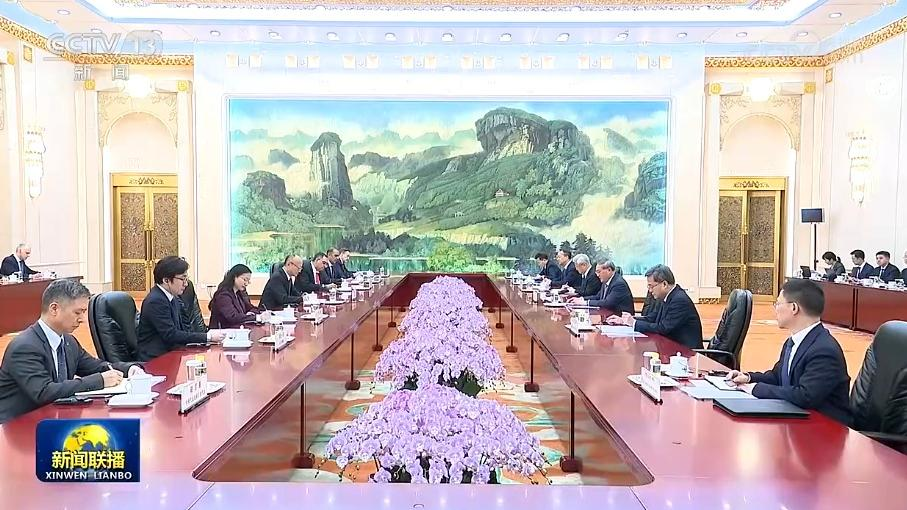
国务院总理李强26日在京会见亚洲开发银行行长神田真人。李强表示，在上周亚太经合组织领导人非正式会议上，习近平主席指出要推动建设和衷共济、开放融通、开拓创新、包容发展的亚太共同体。中方愿同区域各方一道紧密协作，努力实现这一美好愿景。亚行是区域经济一体化的重要推动者，中方将继续支持亚行相关工作，不断提高双方合作水平。中国经济为亚洲和世界经济注入了宝贵的稳定性确定性。……
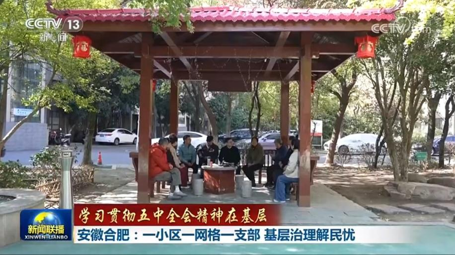
安徽合肥、湖南邵阳深入学习贯彻党的二十届五中全会精神，积极探索完善基层治理和党组织建设，扎实推进全会精神落到实处。
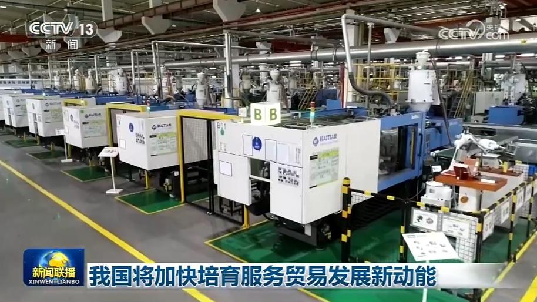
记者今天（11月26日）从商务部了解到，“十五五”时期，我国将以“培育发展新动能”为主线，培育“中国服务”品牌，推动服务贸易高质量发展；从生产性服务和生活性服务两个维度拓展服务贸易新空间，提升“制造＋服务”综合竞争力，塑造旅行服务、文化、中国传统特色服务等生活性服务出口新优势；扩大研发设计、资源循环利用等生产性服务进口，同时鼓励医疗健康、演出赛事等更多优质生活性服务进口；聚焦新业态发展和要素跨境流……
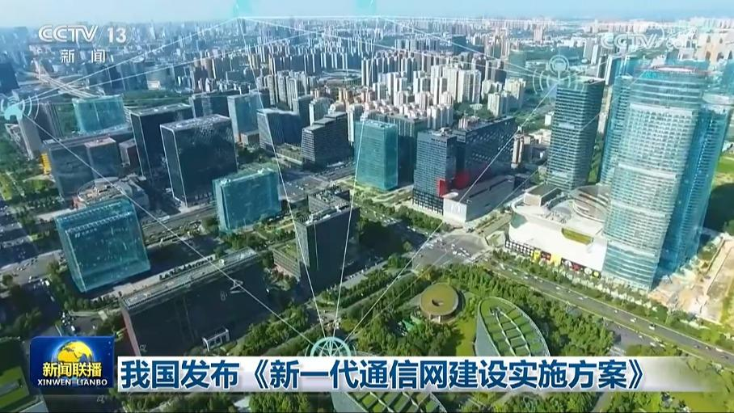
工业和信息化部、国家网信办、国家发展改革委近日印发《新一代通信网建设实施方案》。实施方案明确，到2030年，建成覆盖完善、性能领先的新一代通信网。适时开展6G网络建设，5G-A、万兆光网实现重点区域部署应用，基础网络发展水平持续领先。低轨卫星互联网系统基本建成，频轨资源开发利用水平大幅提升，空间网络形成全球服务能力。工业互联网、车联网等融合网络实现规模化发展。……
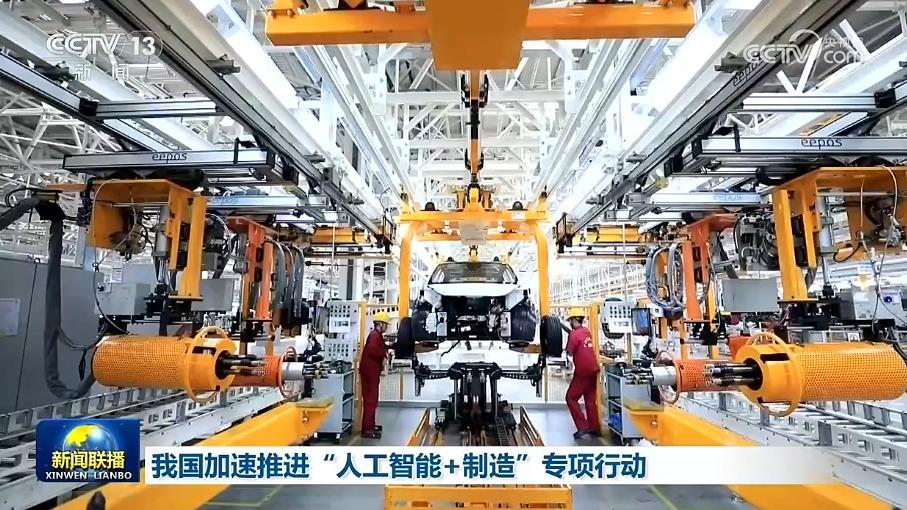
今年以来，我国启动实施“人工智能+制造”专项行动，在应用层面，人工智能已经基本贯穿研发设计、生产制造、质检运维等全链条。
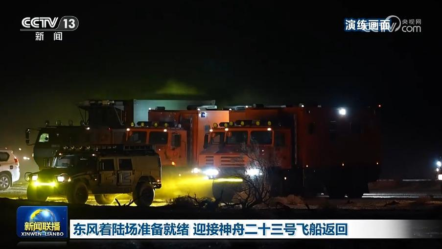
今天（11月26日），东风着陆场组织所有搜救力量，展开神舟二十三号载人飞船返回前的全系统综合演练，做好迎接航天员回家的准备。
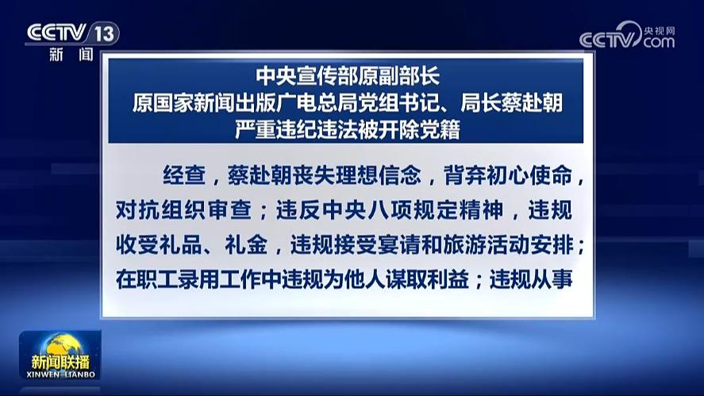
经中共中央批准，中央纪委国家监委对中央宣传部原副部长，原国家新闻出版广电总局党组书记、局长蔡赴朝严重违纪违法问题进行了立案审查调查。
我国首次开展省间省内绿电联合交易
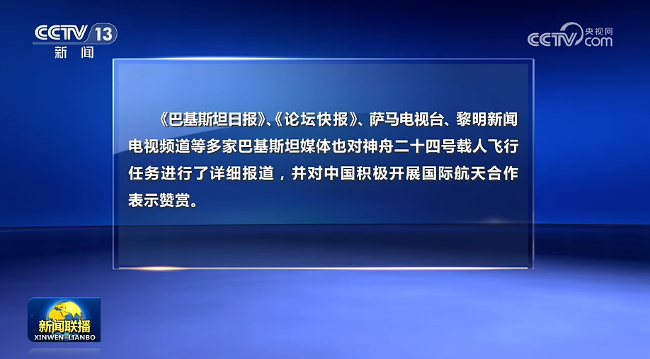
巴基斯坦各界人士表示，得益于中国提供的宝贵机会，巴基斯坦航天员成为首位进入中国空间站的外籍航天员，巴基斯坦航天事业迎来历史性时刻。此次航天合作，是巴中全天候战略合作伙伴关系的又一成功范例。
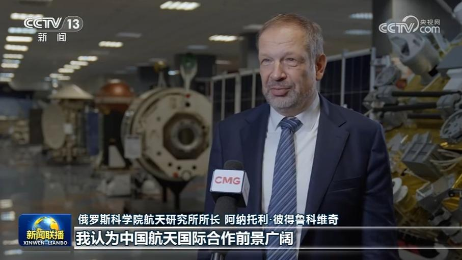
国际人士表示，中国以实际行动推动航天国际合作，与世界共享航天成果、造福各国民众。
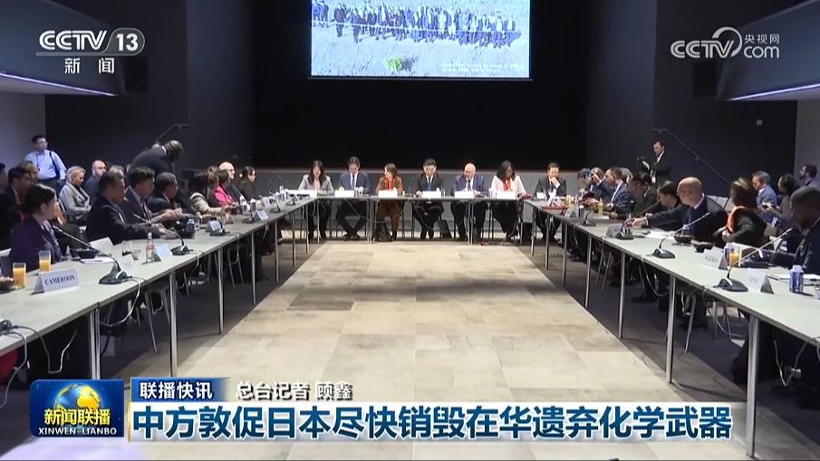
世贸总干事高度评价中国入世25年贡献